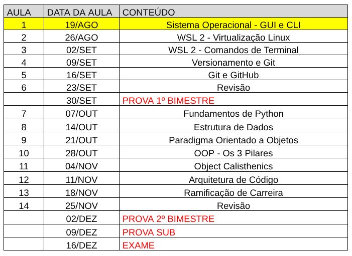
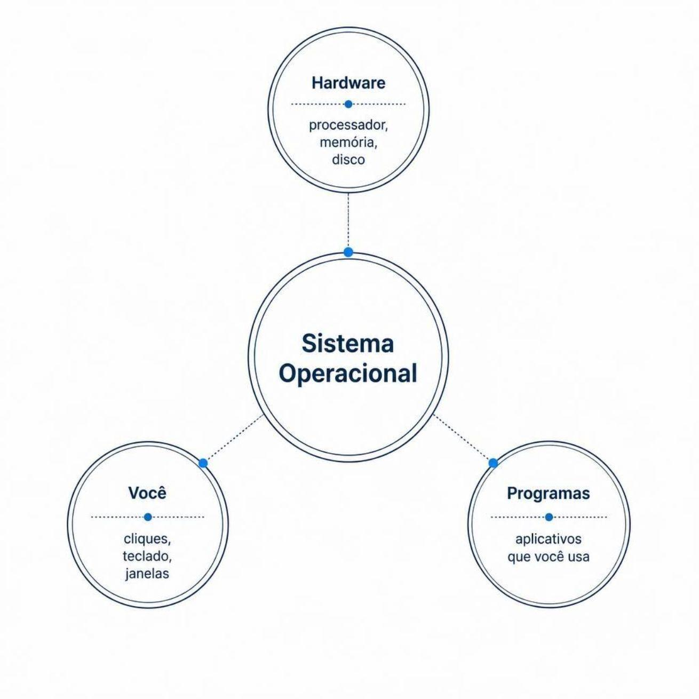
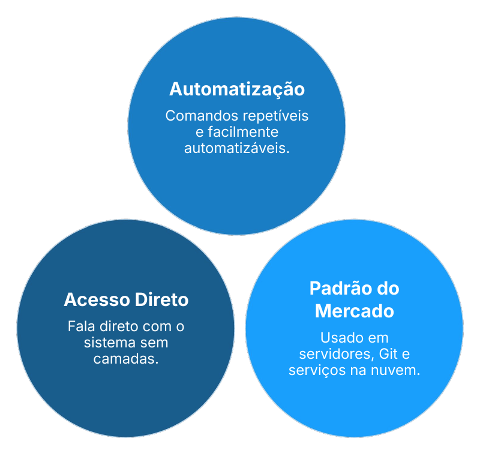

Unifaat
2026.2
01 - SO, CLI e GUI
Prof. Luan Lourenço
Avisos/Disclaimers
- Meta-aprendizagem (Aprendendo a aprender)
- Não se aprende apenas em sala de aula.
- Usem IA com uma base sólida!
- 2 prova teóricas
- TA/TF peso 2 na média. Duas piores notas descartadas!
- Professor também disponível fora do horário de aula (chama no zap)
- Aula mais teórica
Favor, conversa paralela fora da sala! Bora lá!
Cronograma das aulas

Engenharia de Software
Por que não chamamos simplesmente de "Programação"?
Uma pergunta que define tudo.
Programar ≠ Engenharia
# Programar
Habilidade individual de escrever instruções que o computador executa.
Qualquer pessoa aprende a somar dois números em horas.
# Engenharia
Construir coisas que continuam funcionando quando:
• Outras pessoas mexem nelas
• O sistema cresce
• Coisas dão errado
1968 — A Crise do Software
?
Se existe rigor técnico para construir uma ponte, por que não deveria
existir rigor equivalente para construir software?
Conferência organizada pela OTAN
cunhou oficialmente o termo Engenharia de Software.
# ⏱ Prazos
Estourados
# 💰 Orçamentos
Ultrapassados
# ❌ Entrega
Não funcionava
Como o Curso se Organiza
# 1 · 1º Semestre
Onde o código roda?
SO · Terminal · Linux/WSL · Git/GitHub
# 2 · 2º Semestre
Como organizar o que se constrói?
Python · Orientação a Objetos · Boas práticas
Cada ferramenta abre um caminho novo na carreira de quem programa.
O que é um Sistema Operacional?
O SO é o tradutor entre você e o hardware da máquina.
- Gerenciar memória — o que cada programa pode usar
- Gerenciar processos — o que roda e quando
- Gerenciar arquivos — o que está salvo e onde

i
Sem SO, cada programa teria que reinventar do zero como falar com o hardware.
Windows · macOS · Linux
# Windows
Mais comum em PCs e empresas. Kernel fechado pela Microsoft.
# macOS
Exclusivo da Apple. Kernel Darwin, design integrado e polido.
# Linux
Move a maior parte da internet. Servidores, nuvem, infraestrutura.
Ao longo do ano, vamos trabalhar principalmente com Linux.
Camadas de um Sistema Operacional
# 1 · GUI
Janelas, ícones, botões. Intuitiva, mas com custo de memória e processamento.
# 2 · Distro (Linux)
Pacote montado sobre o kernel: Ubuntu, Debian, Fedora. Mesma base, experiências diferentes.
# 3 · Kernel
Núcleo do SO — gerencia memória, processos e dispositivos. Invisível, mas sustenta tudo.
GUI vs. CLI
# GUI · Interface Gráfica
Janelas, ícones, mouse. Intuitiva, mas consome memória e processamento só para existir.
# CLI · Linha de Comando
Texto puro, direto ao sistema. Mais leve, mais rápido — e automatizável.
Um clique de mouse não pode ser salvo e reexecutado mil vezes. Um comando de terminal, sim.
Por que o Terminal Importa?

É o que separa usar um computador de programar de verdade.
O Terminal que Vamos Usar
Não será o CMD nem o PowerShell. Vamos trabalhar
com um terminal Linux — o ambiente padrão do mercado.
- Usado em servidores e nuvem
- Onde Git e GitHub funcionam de forma direta
- Padronizado e amplamente documentado
i
Sem trocar de sistema operacional — graças à virtualização.
- 01 · Entender virtualização — Rodar um SO dentro de outro
- 02 · Configurar WSL — Linux rodando dentro do Windows
- 03 · Dominar comandos básicos — Navegar, criar, manipular arquivos
- 04 · Aprender Git e GitHub — Rastrear a evolução do projeto
O Mapa do Ano
# 1 · Agora
SO, terminal, camadas do sistema
# 2 · Próxima aula
Virtualização e WSL
# 3 · 1º Bimestre
Linux, Git e GitHub
# 4 · 2º Bimestre
Python e orientação a objetos
# 5 · Fim do ano
Caminhos na carreira
Cada etapa constrói sobre a anterior. A fundação começa aqui.
A Provocação de 1968 ainda vale
Programar sozinho não é suficiente.
É preciso saber onde o código roda, como rastrear sua
evolução, e como organizá-lo para sobreviver ao tempo.
Isso é Engenharia de Software.